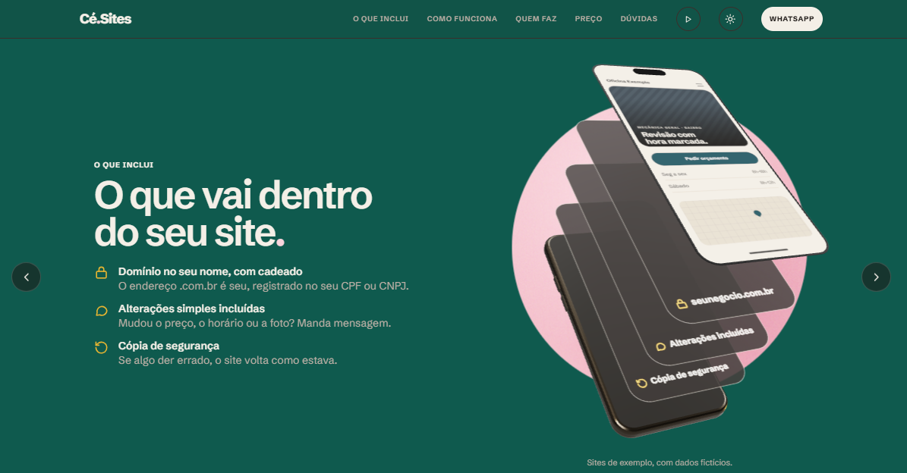

Gabriel Henrique Cé.
Desenvolvedor .NET · C#, em Blumenau. Começo pelo problema de quem usa, decido com o que observo e coloco no ar.
Colocar no ar e ajustar
Cé Sites.
Meu negócio de sites para pequenas empresas.

- Para quem
- Dono de pequeno negócio, que quer um site sem dor de cabeça.
- O que decidi
- Tudo pelo WhatsApp, sem formulário. A página pronta antes de pagar. O domínio no nome do cliente, não no meu.
- O que observei
- No teste com pessoas, no celular, todo mundo passava a animação inteira rolando e não lia nada.
- O que mudei
- Tirei a rolagem presa e troquei por um carrossel que a pessoa passa e lê.
Descobrir
Fala Sério.
Serviço de orientação em saúde menstrual, criado em 54 horas no Startup Weekend Blumenau, com um time formado no evento.
- O que ouvimos
- Nove entrevistas apontaram o mesmo bloqueio: a dor existe, mas a informação não chega.
- O que decidimos
- Uma enfermeira para dizer se o que ela sente é esperado ou se é hora de procurar um ginecologista, na conversa onde ela já está e sem aplicativo.
- O que a regra mudou
- Pela ANS, a assinatura não pode garantir consulta, então o plano inclui prioridade de agendamento. Pelo COFEN, a telenfermagem exige registro auditável, e WhatsApp puro não cumpre.
- Resultado
- 3º lugar. Modelo projetado com 54% de margem de contribuição e equilíbrio em 596 assinantes.
- Minha parte
- O site do projeto.
Modelar o domínio
NoPrumo.
Gestão de obras para construtoras. TCC do Entra21, em equipe de cinco pessoas.
- Para quem
- A construtora, em que o mestre de obras e a administração precisam de coisas diferentes.
- O que decidimos
- A obra é o centro do sistema. O mestre enxerga quantidade e a administração enxerga dinheiro.
- Por quê
- Esconder na tela não basta: se o valor vier no JSON, o DevTools mostra. Por isso a API devolve um DTO por perfil.
- Liderança
- Liderei a equipe de cinco pessoas: dividi o trabalho em fatias e coordenei a entrega e a revisão de cada uma.
- O que fiz
- O login com JWT, a tela de login e o cadastro de usuários, as obras e etapas, o financeiro da obra e o painel.
Como trabalho com IA.
Uso IA todo dia para estudar e programar, e busco melhorar sempre: fiz o Entra21, curso Engenharia de Software e treino por conta própria. As regras que ela segue nos meus projetos estão escritas e são públicas: desenho antes do código e nada de commit sem o meu ok.
A Trilha C# é meu treino com IA: faço exercícios até não precisar mais dela naquele assunto. Depois volto a usar, e ela deixa de ser muleta e vira ferramenta. É um ciclo.
De onde venho.
- 2024 – atualTécnico AT Empresarial III, Claro. Clientes empresariais sob SLA de 4 horas.
- 2026C# Developer Essentials, 320 horas, Entra21.
- 2025 – 2028Engenharia de Software, Uniasselvi. 4º semestre.